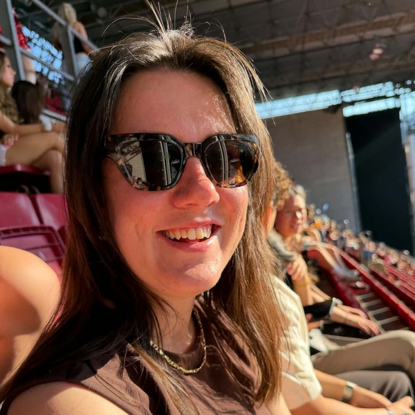
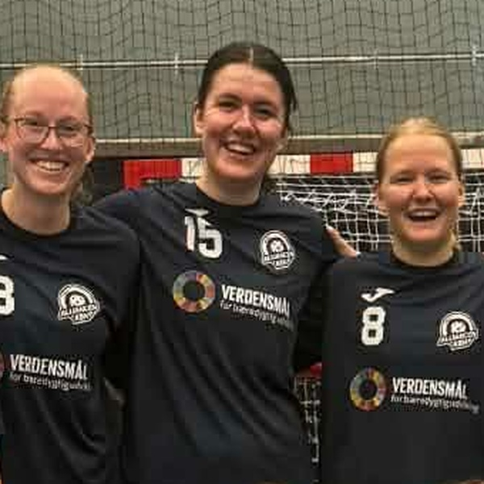
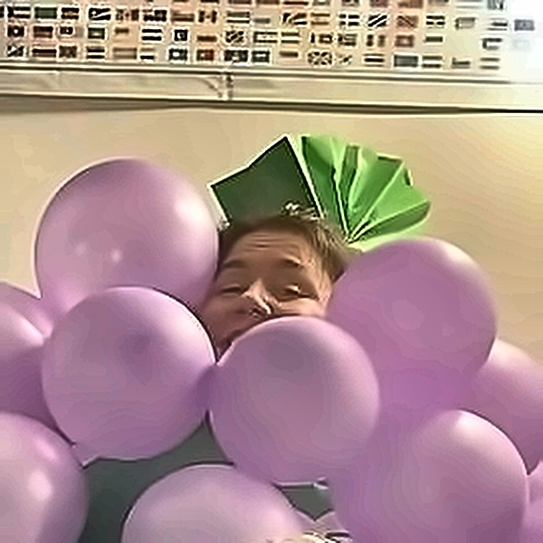
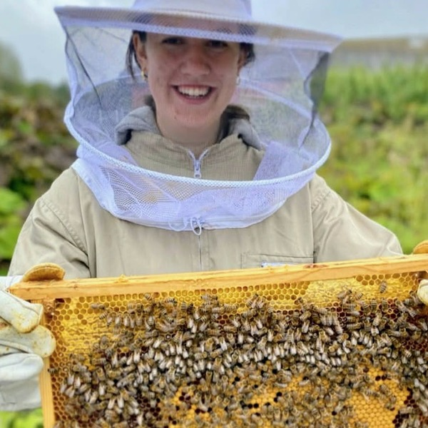
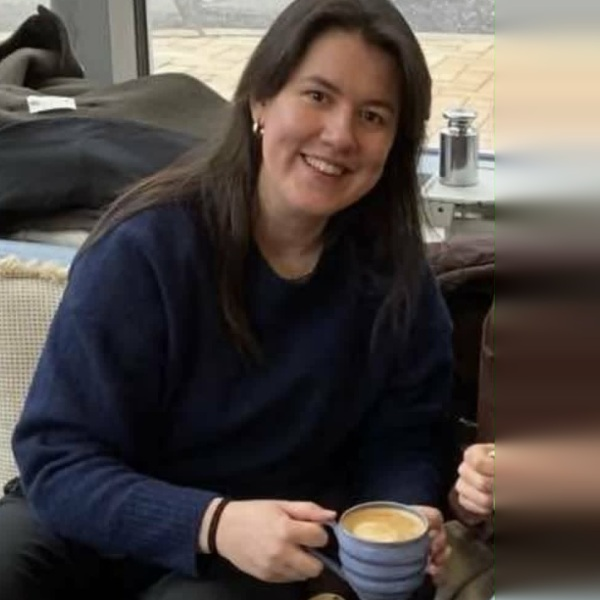

I know how to enjoy life
Concerts, travel and new experiences are at the top of my list, and I rarely say no to a ticket. So if you need ideas for the team day, or just want to know what's on in town this weekend, you know who to ask.
UX research · Usability · Co-creation
I'm a newly graduated BEng in Process and Innovation from DTU with two years in Demant's Usability & Co-creation team. I plan and run studies with real users, from recruiting and interviews to co-creation workshops and usability tests, and turn the findings into recommendations that stakeholders can act on. Most of my work has been in medtech and healthcare.
Open to work · Aarhus · on-site or hybrid

I use AI to work faster on the heavy parts of research. I decide what it gets, check what comes back, and stand behind the result.
Every pattern AI suggests is checked against the source material before I use it.
AI grouped feedback and flagged patterns. I checked every theme against the source material.
Claude turned users' and specialists' ideas into storyboards and early visual MVPs, so the concepts were easy to picture and build on. I chose and refined the directions. The visuals were never used as user evidence.
Claude helped with the code, ChatGPT with structure and language. I made the final content and design decisions.
Tools: Claude, ChatGPT, Copilot · Figma, Miro, Canva
I'm drawn to technical products and the people who have to use them. I like getting into how something works, talking to the people using it, and analysing my way to what should change.
Two years in Demant's Usability & Co-creation team taught me the craft: recruiting participants, running interviews, workshops and usability tests, and presenting the results to the people who make the decisions. My DTU projects added other settings, from a hospital's patient instructions to a transit-card app and two innovation projects.
I work best with people from other disciplines, such as engineers, audiologists and designers, and I like driving a project forward instead of only handing over a report.
BEng in Process and Innovation
Interdisciplinary engineering degree combining product development, user-centred design, innovation and business. Includes a 20-week internship and the bachelor project, both with Demant.
Each link opens the case where I used the method.
"What sets her apart is her ability to cut through complexity and quickly identify what truly matters for the user and the product."
(that you won't find on my CV)

Concerts, travel and new experiences are at the top of my list, and I rarely say no to a ticket. So if you need ideas for the team day, or just want to know what's on in town this weekend, you know who to ask.

I've always played team sports, and these days it's floorball. The sports have changed, but the lesson hasn't: You never win alone, and you have to be able to take a pass, even when it's a little off target.

For Halloween, I was a bunch of purple grapes. It took a lot of balloons. Once I'm on board with an idea, I don't do it halfway. You can look forward to my costume at the next company party.

At folk high school, I tried beekeeping. Just because. I'm always curious to try new things and approach them with an open mind, even when they buzz. The same goes for new ideas, methods and tools at work.

Some call it a caffeine addiction. I call it stakeholder mapping: Where the coffee is, the colleagues are, and that's where the good conversations happen.
Everything work-related is on my CV.
Four people from my team at Demant, where I worked as a student assistant for two years, including a 20-week internship.
What comes up again and again (tap a word)
Direct manager
“She approaches every task with initiative and curiosity - quickly figuring out who to involve, how to structure the work, and how to deliver strong results.”
Team manager
“She is pleasant to work with, meets others with respect and a good attitude, and is able to build strong relationships across the organisation.”
Colleague
“She has also independently planned, prepared, and executed several user tests and UX evaluations.”
Colleague
“Her proactive mindset and can-do attitude make her a great team player and a joy to work with.”
Looking for a UX professional with an engineering mindset? I would love to hear from you — whether it is about a specific role or just a good conversation.